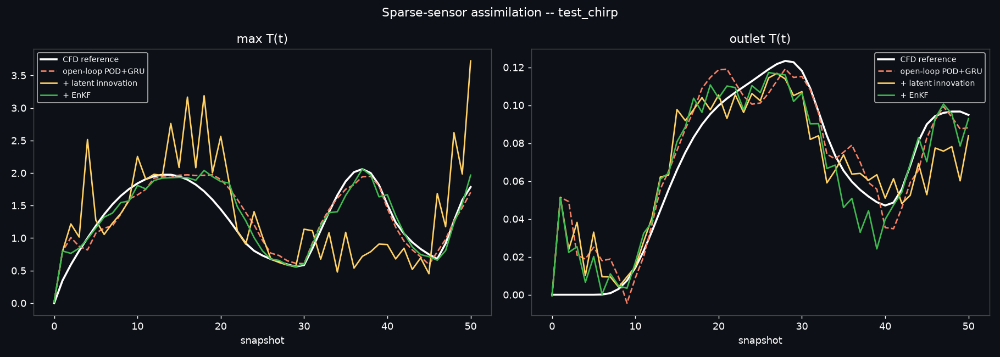

Success stories · Case · thermal processes
A digital twin that corrects itself with six sparse sensors
Four AI families learn the dynamics of a channel with a heater and varying flow; an ensemble Kalman filter keeps the prediction on the curve when the plant changes.
Proof of concept
Objective
A process digital twin has to answer faster than the plant and stay right when the operator changes flow rate and power in ways the model has never seen. A full simulation is too slow to follow the operation, and a purely learned model fails exactly when the input leaves the pattern. This case measures both halves of the problem: the surrogate's speed and the ability to correct it with a few sensors.
Key results
- The AI tracks peak temperature almost on top of the simulation curve for control signals that were not in training, and runs tens of times faster.
- Six sparse sensors correct the drift. EnKF improves accuracy by 23% over the raw prediction — that is what separates a video of the process from a twin.
- The architecture is the result, not the number: four model families were compared on the same trajectories, so the choice did not depend on one of them working.
Inputs the model has never seen
Training on steps and testing on steps is the mistake that produces digital twins which work in the demo and fail on the plant. The test trajectories here are chirp, sawtooth and random walk in flow rate and power — none of them appears in training.
FNO was the best of the four on unseen trajectories, with 12% relative error on temperature and 5.3% on streamwise velocity.
Correct with a few sensors, not by measuring everything
Measuring the whole field is what the simulation already does. The twin's value is keeping the estimate right with sparse instrumentation — six sensors in this case. The ensemble Kalman filter assimilates those readings and corrects the latent prediction.

“This is a synthetic 2D laminar channel, not a plant. It stands as a demonstration of the digital-twin architecture, not as a design number.”
Let's build your solution
Your engineering challenge could be our next project.
Talk to our team about Physics AI consulting or explore PINNeAPPle Studio for modeling and verification workflows.